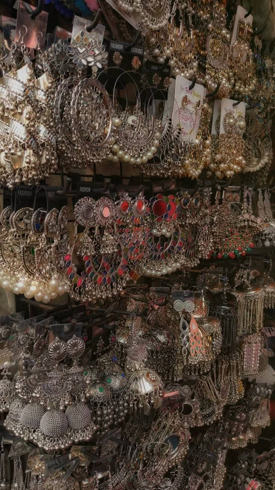

Our Story
ABOUT
INTERRASA
A two-day multicultural exhibition celebrating the richness of Indian civilisation — where culture becomes emotion and observation becomes immersion.
A two-day multicultural exhibition celebrating the richness of Indian civilisation — where culture becomes emotion and observation becomes immersion.
Born from the fusion of "intreccio" — Italian for intertwining — and "rasa" — Sanskrit for emotion, essence, and aesthetic experience — Interrasa becomes a space where cultures, senses, and stories are woven together.
It represents interwoven emotions and lived experiences — where India is not presented as an object to observe, but as a world to enter, feel, and move through.
The storyline follows the rhythm of an ordinary Indian day, transforming familiar moments into immersive cultural experiences. As visitors move through the space, they step into fragments of daily life that together weave a larger narrative of identity, craftsmanship, memory, and connection.
A live dialogue between Indian culture and Milan's design community. Two civilisations with shared appreciation for craftsmanship, heritage, and lived beauty.
India presented not through clichés, but through the intimate, everyday rituals that continue to shape its identity — the true essence of a living civilisation.
Free public entry, open to Milanese citizens, the Italian public, and the 50,000+ Indian diaspora in Lombardy. Civic patronage positions Milan as a truly inclusive global hub.
The journey begins with touch — textiles, handcrafted rugs, fabric swatches, and the artistry of Indian craftsmanship preserved through generations. Visitors experience the richness of Indian materials and the dialogue between Indian and Italian craftsmanship.
As the experience unfolds, scent becomes a storyteller. Incense, natural aromas, spices, and mouth fresheners recreate the sensory landscape of Indian homes, temples, streets, and gatherings.
Cinema becomes the emotional bridge — showcasing stories that shaped Indian society. Interactive spaces invite visitors to become part of the narrative: customizing dolls from sustainable scraps, sampling traditional flavours, experiencing installations that reflect the movement and vibrancy of Indian streets.
At its heart, Interrasa is about connection — between people and traditions, memory and modernity, India and Italy.

A premier embroidery and textile house — collaborating on the swatch book exhibition. Guests explore exquisite textile swatches wearing gloves, creating a museum-like interaction that honours the value and delicacy of Indian craftsmanship.
The event seeks civic patronage from the Comune di Milano, positioning the city as a truly inclusive global hub — celebrating the Indian diaspora of 50,000+ and welcoming all Milanese citizens to experience a culture beyond stereotypes.
The grand opening ceremony will feature the Consul General of India alongside a Comune di Milano representative — marking the event as a significant cultural bridge between India and Italy at the highest diplomatic level.
One day. One city. One extraordinary encounter between two great civilisations. A free public exhibition that turns ordinary cultural practices into layered narratives — revealing the true essence of India.